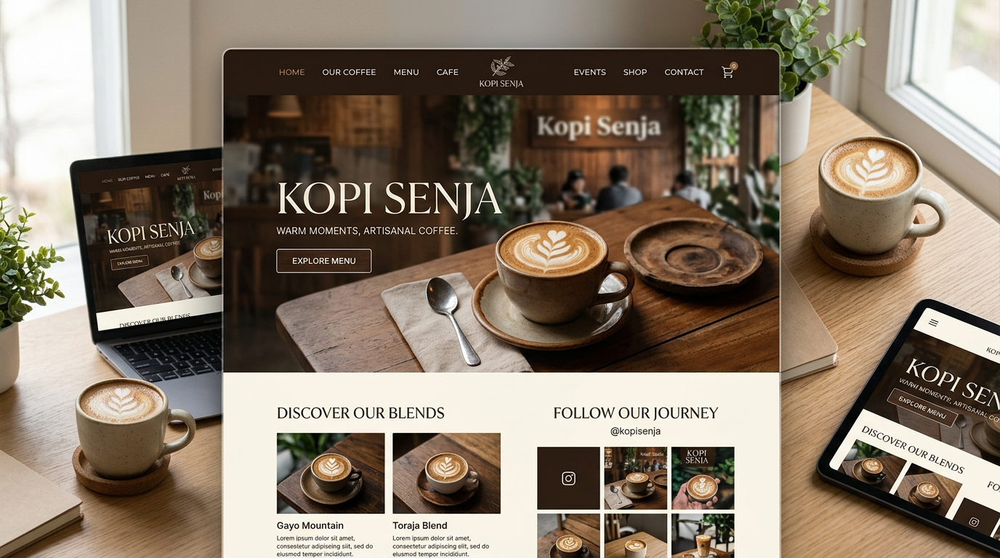

Website Kopi Senja
Website bertema coffee shop modern dengan nuansa hangat dan elegan, menampilkan menu pilihan, cerita kopi, serta navigasi yang responsif untuk pengunjung.
HTML5
·
CSS3
·
JavaScript